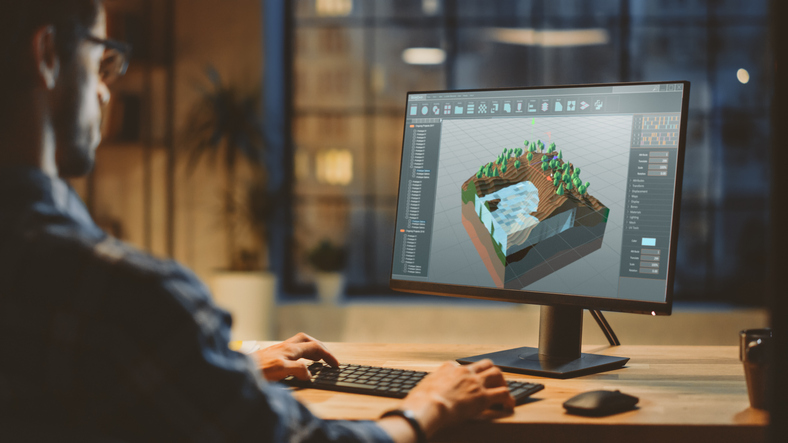
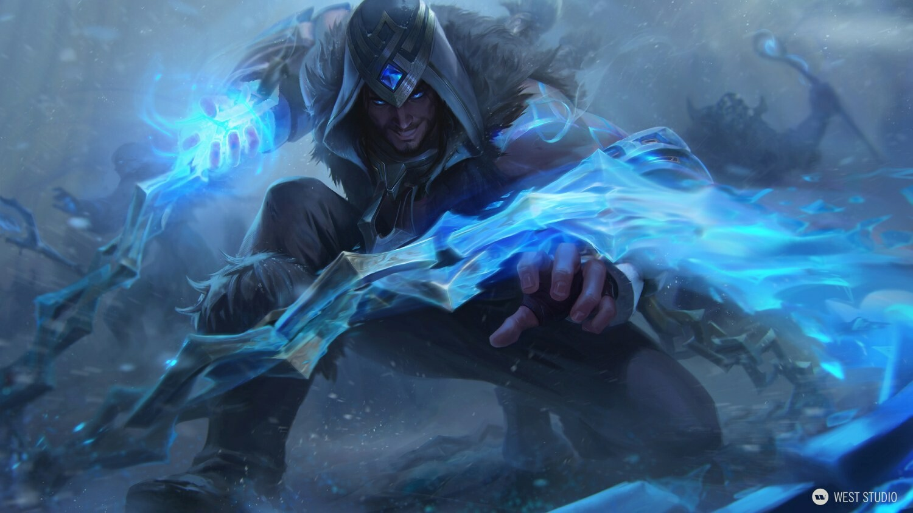
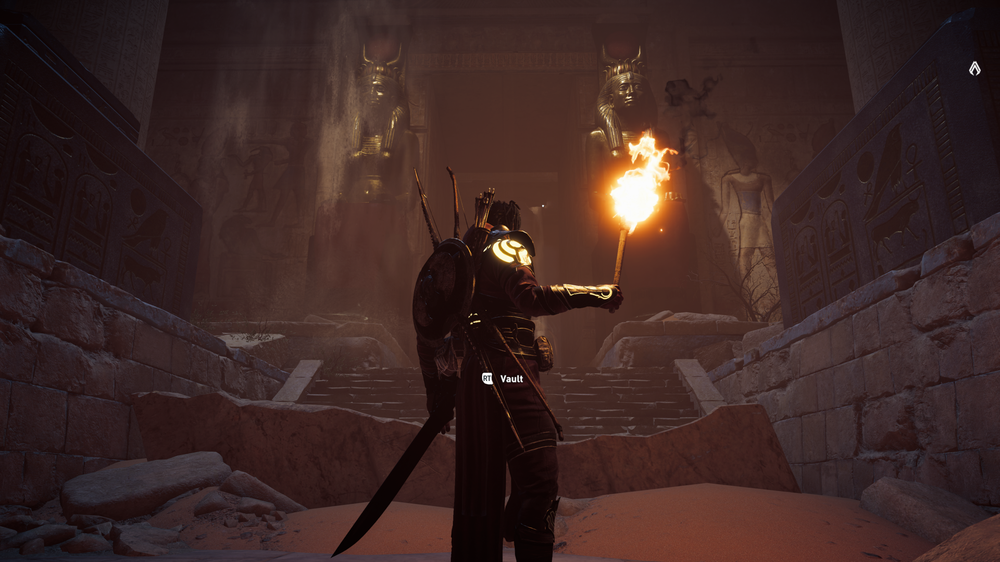
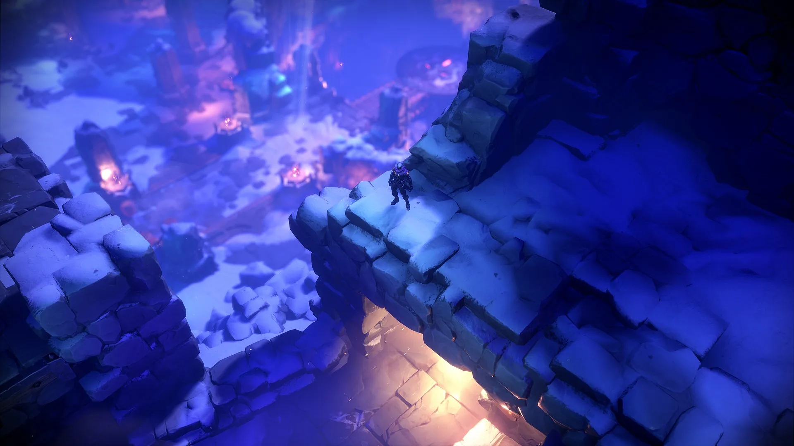
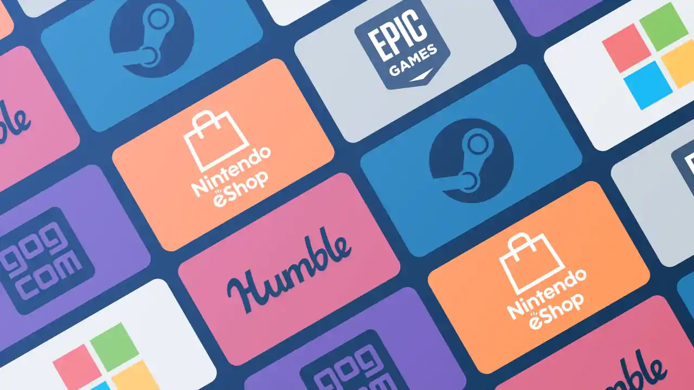

Poate fi intern sau extern. Producătorul intern lucrează pentru dezvoltator și se ocupă cu organizarea echipei de development, orare, angajări, monitorizează progresul general etc.
Producătorul extern sau managerul de proiect se asigură că procesul de dezvoltare a jocului se desfășoară fără probleme, etapele de referință sunt îndeplinite, riscurile sunt anticipate/atenuate și membrii echipei fac ceea ce ar trebui să facă. Ele sunt adesea centrul de comunicare între echipele de dezvoltare și proiectare și directori. Managerii de proiect trebuie să fie foarte bine organizați și să aibă abilități de comunicare între oameni foarte bune.
Echipa de dezvoltare poate varia ca dimensiuni, putând fi formată dintr-un număr mai mic de dezvoltatori care creează jocuri mai mici, sau chiar sute de angajați ce produc mai multe titluri mari. Aceștia pot fi designeri, artiști sau programatori.
Un programator de jocuri este un inginer software care dezvoltă în principal jocuri video sau software conexe în dezvoltarea lor. De obicei, există de la unul până la mai mulți programatori-șefi care implementează baza de cod de pornire a jocului și gestionează împărțirea sarcinilor de lucru, respectiv posibilele îmbunătățiri ale programului actual. Un programator începător poate câștiga, în medie, în Statele Unite ale Americii, în jur de 70.000 dolari anual, iar un programator profesionist poate câștiga, în medie, aproximativ 125.000 dolari anual.
Anumite lucruri pe care programatorii se concentrează în crearea unui joc video sunt:
Un designer de jocuri este o persoană care proiectează jocul, concepe și proiectează regulile și structura unui joc. Echipele de dezvoltare au de obicei un designer-șef care coordonează munca altor designeri. El este principalul vizionar al jocului. Unul dintre rolurile unui designer este de a fi scriitor, adesea angajat cu normă parțială pentru a concepe povestea jocului, dialogul, comentariul, acțiunea scenei, conținutul de ambalare a jocurilor video, sistemul de indicii etc. În proiectele mai mari, există adesea designeri separați pentru diferite părți ale jocului, cum ar fi mecanica jocului, interfața cu utilizatorul, personajele, dialogul, grafica etc.
Munca artistului poate fi orientată 2D sau orientată 3D. Artiștii 2D pot produce artă conceptuală, texturi, fundaluri de mediu sau imagini de teren și interfață cu utilizatorul. Artiștii 3D pot produce modele sau rețele, animație, mediu 3D și scene cinematice. Artiștii ocupă uneori ambele roluri. Cum jucătorii se așteaptă la o experiență grafică ca cea din filme, 75-90% din bugetul unui joc se duce la partea grafică.
Ilustrație 2D tip 'splash art' cu personajul Silas din jocul 'League of Legends'.
Scenă din jocul 'Assassin's Creed: Origins'
Un designer de niveluri de joc este o persoană care creează niveluri, provocări sau misiuni pentru jocuri video folosind un anumit set de programe. Aceste programe pot fi cumpărate sau pot fi create.
Scenă din al patrulea nivel al jocului 'Darksiders: Genesis'
Distribuitorul este o companie care publică jocuri video pe care fie le-au dezvoltat intern, fie le-au dezvoltat de un dezvoltator extern de jocuri video. Ca și în cazul editorilor de cărți sau al editorilor de filme pe DVD, distribuitorii de jocuri video sunt responsabili de fabricarea și marketingul produselor lor, inclusiv de cercetarea pieței și toate aspectele publicității.
Alte funcții îndeplinite de obicei de distribuitor includ:
Dezvoltatorii independenți de jocuri video creează jocuri fără un distribuitor și pot alege să-și distribuie în mod digital jocurile.
